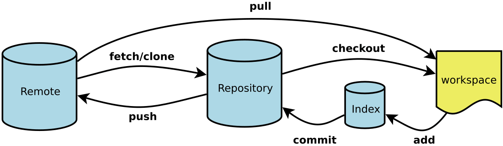

 [^整体结构图]
Workspace：工作区
Index / Stage：暂存区
Repository：仓库区（或本地仓库）
Remote：远程仓库
# 在当前目录新建一个Git代码库
$ git init
# 新建一个目录，将其初始化为Git代码库
$ git init <project-name>
Git的设置文件为.gitconfig，它可以在用户主目录下（全局配置），也可以在项目目录下（项目配置）。在Git工作区的根目录下创建一个特殊的.gitignore文件，然后把要忽略的文件名填进去，Git就会自动忽略这些文件。可以参考：https://github.com/github/gitignore
# 显示当前的Git配置
$ git config --list
# 编辑Git配置文件
$ git config -e [--global]
# 设置提交代码时的用户信息，加--global则是全局配置
$ git config [--global] user.name "<name>"
$ git config [--global] user.email "<email address>"
# 添加指定文件到暂存区
$ git add <file1> <file2> ...
# 添加指定目录到暂存区，包括子目录
$ git add <dir>
# 添加当前目录的所有文件到暂存区
$ git add .
# 添加每个变化前都要求确认。对于同一个文件的多处变化，可以实现分次提交。
$ git add -p
# 删除工作区文件，并且将这次删除放入暂存区。
$ git rm <file1> <file2> ...
# 停止追踪指定文件，但该文件会保留在工作区
$ git rm --cached <file>
# 改名文件，并且将这个改名放入暂存区
$ git mv <file-original> <file-renamed>
git stash命令可以暂存当前工作状态，包括工作区和暂存区，然后工作区被重置为HEAD指向内容。
# 对当前的暂存区和工作区状态进行保存，然后重设为HEAD所指的。
# 使用save可以对进度添加备注。
$ git stash [save "<message>"]
# 列出所有保存的进度列表。
$ git stash list
# 恢复工作进度，并删除进度。
# --index 参数：不仅恢复工作区，还恢复暂存区。
# <stash> 指定恢复某一个具体进度。如果没有这个参数，默认恢复最新进度。
$ git stash pop [--index] [<stash>]
#恢复编号为0的进度的工作区和暂存区
$ git stash pop --index stash@{0}
# 不删除已恢复的进度，其他同git stash pop
$ git stash apply[--index] [<stash>]
# 删除某一个进度，默认删除最新进度。
$ git stash drop[<stash>]
# 删除所有进度
$ git stash clear
由git commit命令控制，加-v选项，则提交时显示所有diff信息。
# 提交暂存区到仓库区
$ git commit -m "<message>"
# 提交暂存区的指定文件到仓库区
$ git commit <file1> <file2> ... -m "<message>"
# 提交工作区自上次commit之后的变化，直接到仓库区
$ git commit -a
# 使用一次新的commit，替代上一次提交
# 如果代码没有任何新变化，则用来改写上一次commit的提交信息
$ git commit --amend -m "<message>"
# 重做上一次commit，并包括指定文件的新变化
$ git commit --amend <file1> <file2> ...
# 列出所有本地分支
$ git branch
# 列出所有远程分支
$ git branch -r
# 列出所有本地分支和远程分支
$ git branch -a
# 新建一个分支，但依然停留在当前分支
$ git branch <branch-name>
# 新建一个分支，并切换到该分支
$ git checkout -b <branch>
# 新建一个分支，指向指定commit，即指向选定的提交版本。
$ git branch <branch> <commit>
# 新建一个分支，指向某个tag
$ git checkout -b <branch> <tag>
# 新建一个分支，与指定的远程分支建立追踪关系
$ git branch --track <branch> <remote-branch>
# 切换到指定分支，并更新工作区
$ git checkout <branch-name>
# 切换到上一个分支
$ git checkout -
# 合并指定分支到当前分支,现在的分支对应指定的分支的父节点，则采用快进模式
$ git merge <branch> -m "message"
# 复制"一个提交节点并在当前分支做一次完全一样的新提交
$ git cherry-pick <commit>
# 删除分支
$ git branch -d <branch-name>
# 删除远程分支
$ git push <remote> --delete <branch-name>
$ git branch -dr <remote/branch>
git标签分为两种类型：轻量标签和附注标签。轻量标签是指向提交对象的引用，附注标签则是仓库中的一个独立对象。建议使用附注标签。对于附注标签，加-a选项来添加标签说明。
# 列出所有tag
$ git tag
# 查看tag信息
$ git show <tag>
# 在当前commit新建一个轻量标签
$ git tag <tag>
# 在当前commit创建附注标签
$ git tag -a <tag> -m "<message>"
# 在指定的提交（commit）新建一个tag
$ git tag <tag> <commit>
# 删除本地tag
$ git tag -d <tag>
# 删除远程tag
$ git push <remote> :refs/tags/<tag>
# 向远程主机推送指定tag
$ git push <remote> <tag>
# 提交所有tag
$ git push <remote> --tags
# 显示工作区和缓存区情况
$ git status
# 显示某个文件的版本历史，包括文件改名
$ git log --follow <file>
$ git whatchanged <file>
# 显示指定文件相关的每一次diff
$ git log -p <file>
# 显示指定文件是什么人在什么时间修改过
$ git blame <file>
# 显示commit历史，以及每次commit发生变更的文件
$ git log --stat
# 搜索提交历史，根据关键词
$ git log -S <keyword>
# 显示某个commit之后的所有变动，每个commit占据一行
$ git log <tag> HEAD --pretty=format:%s
# 显示某个commit之后的所有变动，其"提交说明"必须符合搜索条件
$ git log <tag> HEAD --grep feature
# 显示过去5次提交
$ git log -5 --pretty --oneline
# 显示所有提交过的用户，按提交次数排序
$ git shortlog -sn
# 显示某次提交的元数据和内容变化
$ git show <commit>
# 显示某次提交发生变化的文件
$ git show --name-only <commit>
# 显示某次提交时，某个文件的内容
$ git show <commit>:<filename>
# 显示当前分支的版本历史
$ git log
# 显示当前分支的最近几次提交
$ git reflog
# 列出分支图
$ git log --graph --all --abbrev-commit --date=relative
# 显示暂存区和工作区的差异
$ git diff
# 显示暂存区和上一个commit的差异
$ git diff --cached <file>
# 显示工作区与当前分支最新commit之间的差异
$ git diff HEAD
# 显示两次提交之间的差异
$ git diff <first-branch>...<second-branch>
# 显示今天你写了多少行代码
$ git diff --shortstat "@{0 day ago}"
默认为当前目录，命名远程主机为origin。如果要修改远程主机名，加-o选项，后跟主机名。
# 从远程主机克隆一个版本库到当前目录
$ git clone <url>
# 从远程主机克隆一个版本库到指定目录
$ git clone <url> <dir>
通过git remote命令管理主机名
# 列出全部远程主机名
$ git remote
# 查看主机名和网站
$ git remote -v
# 查看该主机的详细信息
$ git remote show <remote>
# 添加远程主机
$ git remote add <remote> <url>
# 删除远程主机
$ git remote rm <remote>
# 远程主机的改名
$ git remote rename <remote-original> <remote-rename>
在git clone的时候，所有本地分支默认与远程主机的同名分支，建立追踪关系，本地的master分支自动”追踪”origin/master分支。Git也允许手动建立追踪关系。可以在建立分支的时候就建立追踪关系新建分支。
# 指定master分支追踪origin/next分支。
$ git branch - -set-upstream master origin/next
如果当前分支与多个主机存在追踪关系，则可以使用-u选项指定一个默认主机，这样后面就可以不加主机名参数使用git push。
分支推送顺序的写法是<来源地>:<目的地>
# 查看远程分支
$ git branch -r
# 显示所有远程仓库
$ git remote -v
# 显示某个远程仓库的信息
$ git remote show <remote>
# 增加一个新的远程仓库，并命名
$ git remote add <remote-name> <url>
# 下载远程仓库的所有变动
$ git fetch <remote>
# 取回特定分支的更新
$ git fetch <remote> <branch>
# 取回远程仓库的变化，并与本地分支合并，等同于先做git fetch，再做git merge
$ git pull <remote> <remote-branch>：<branch>
# 如果与当前分支合并
$ git pull <remote> <remote-branch>
# 如果当前分支与远程分支存在追踪关系，git pull就可以省略远程分支名。
$ git pull
git push 不会推送标签（tag），除非使用 --tags 选项。
# 上传本地指定分支到远程仓库
$ git push <remote> <branch>:<remote-branch>
# 如果省略远程分支名，则表示将本地分支推送与之存在”追踪关系”的远程分支（通常两者同名），如果该远程分支不存在，则会被新建。
#如果省略本地分支名，则表示删除指定的远程分支，因为这等同于推送一个空的本地分支到远程分支。
#如果当前分支与远程分支之间存在追踪关系，则本地分支和远程分支都可以省略。
# 强行推送当前分支到远程仓库，即使有冲突
$ git push <remote> --force
# 推送所有分支到远程仓库
$ git push <remote> --all
# 恢复暂存区的指定文件到工作区
$ git checkout <file>
# 恢复暂存区的所有文件到工作区
$ git checkout .
# 恢复某个commit的指定文件到暂存区和工作区，写HEAD代表当前commit
$ git checkout <commit> <file>
# 重置暂存区的指定文件，与上一次commit保持一致，但工作区不变
$ git reset <file>
# 重置暂存区与工作区，与上一次commit保持一致
$ git reset --hard
# 重置当前分支的指针为指定commit，同时重置暂存区，但工作区不变
$ git reset <commit>
# 重置当前分支的HEAD为指定commit，同时重置暂存区和工作区，与指定commit一致
$ git reset --hard <commit>
# 重置当前HEAD为指定commit，但保持暂存区和工作区不变
$ git reset --keep <commit>
# 新建一个commit，用来撤销指定commit
# 后者的所有变化都将被前者抵消，并且应用到当前分支
$ git revert <commit>
# 生成一个可供发布的压缩包
$ git archive